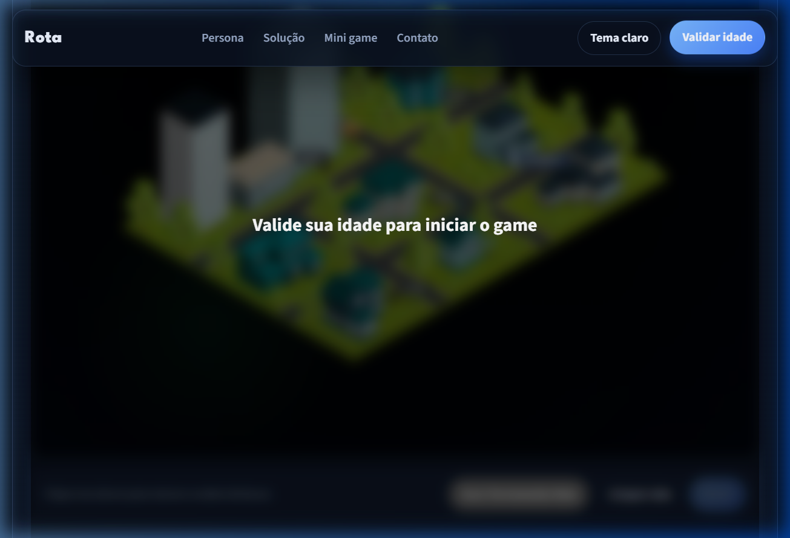

Mapa Interativo
Exibe os endereços visualmente com as ruas mapeadas, resolvendo a dor de esquecer o trajeto dos alunos.
Como o site atende a persona
Exibe os endereços visualmente com as ruas mapeadas, resolvendo a dor de esquecer o trajeto dos alunos.
A ferramenta utiliza o poderoso Algoritmo de Dijkstra para calcular matematicamente o menor caminho em um grafo de ruas, zerando o desperdício.
Simula o desgaste e o sono na viagem para forçar a tomada de decisão rápida e inteligente antes de partir.
História do jogo
Fábio Alves precisa sair da garagem, buscar os alunos confirmados e chegar à faculdade antes do horário da aula, economizando combustível no trajeto.
Além de escolher a melhor sequência de embarque, Fábio luta contra o cansaço e a narcolepsia, o que pode atrasar a viagem se o jogador não escolher a melhor rota.
Transformar um problema real de transporte universitário em um mini game que apresenta uma solução real, com lógica, cenário, personagens, animação e tomada de decisão.
Rabisco das telas
Este rabisco resume as duas telas principais do projeto e deixa claro o fluxo de navegação para a avaliação.

O print acima substitui o rabisco em caixas para comprovar visualmente o conceito final da interface do jogo, barras de status e mapa isométrico.
Entrega um canal simples para feedback, melhorias e retorno do usuário sobre o sistema.
Estrutura do sistema
Página inicial (Landing Page) com Persona e introdução.
Apresentação da solução, dores, wireframes e estrutura.
Sessão interativa com o Mini Game (Tech Forge).
Canal simples para feedback e melhorias.